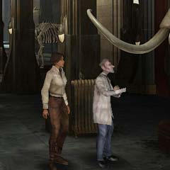

| 概要 | 地図 | |
| 淡いヒント集 | ヒント集 | 的確なヒント集 |
| 攻略最短ルート | Syberia 攻略へ |
| << 前の段階へ | 地域選択へ | 次の段階へ >> |
バロクシュタット
|
大学にて(前半)

大学に行ったら、すぐに学長のもとへ行くべきだ。彼らは、大学の様々な情報を知っているし(かなりいい加減なのだが)、資金の援助もしてくれるだろう。 ただし、資金の援助の変わりに大学の演奏台の修理を要求してくるはずだ。ここで、あなたがやらなければならないことの優先順位が変わるはずだ。 
図書館には、このようにはしごが掛けられ上の棚を調べることができる。もし、調べていないのならば、調べておこう。重要な本が置いてある。 図書館の自習室には重要な本が一冊ある。机の上をよく調べると、誰も使わないだろう本が置いてある。

マンモスを眺めているポンス教授は重要な人物だ。彼は、あなたが調べているハンスについて詳しいことを知っているし、大学にいる誰よりも友好的である。 彼の会話を聞いていて、彼がマンモスの人形を見たがっているのに気づいただろうか? 機関車にその人形があるはずだ。親切に接してくれたお礼に、見せてあげてもいいだろう。 
|
| << 前の段階へ | 地域選択へ | 次の段階へ >> |
| 概要 | 地図 | |
| 淡いヒント集 | ヒント集 | 的確なヒント集 |
| 攻略最短ルート | Syberia 攻略へ |
Syberia
| 目次へ戻る | ページの上部へ |